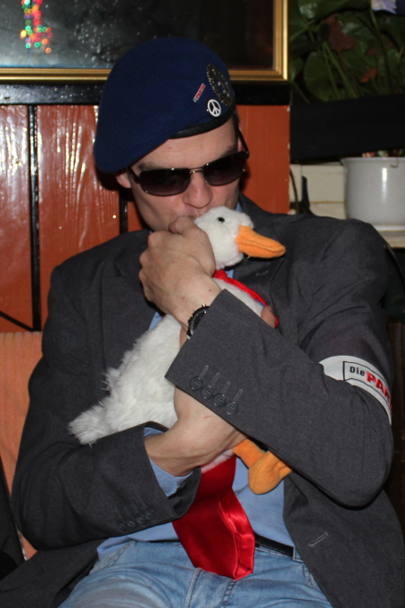

Dr. Prachar: "Gänselieselwahl reformieren!"
Ein Vorschlag zur Entbürokratisierung und Entkrampfung
"Das bisherige Verfahren ist bürokratisch, umständlich und
undurchsichtig", erläutert Direktkandidat Dr. Christian Prachar auf der
Pressekonferenz der Partei Die PARTEI in der HafenBar Kadenz. Er
liebkost die Gans Egal, das Maskottchen der PARTEI in
Martin-Sonneborn-Stadt, noch einmal besonders innig, um dann die
anwesenden Pressevertreterinnen eindringlich nacheinander zu mustern.
"Außerdem ist der Wahlmanipulation Tür und Tor geöffnet." Wer nur genug Nachbarn und Freunde zusammentrommele, können auf Schleichwegen auch eine gänzlich ungeeignete Person in das so wichtige Amt des Gänseliesels hieven. Damit müsse nun Schluss sein. Eine objektive Auswahl könne nur von einer kompetenten Jury getroffen werden, die, und das sei die wichtigste angestrebte Neuerung, nur aus einer einzigen Person bestehen müsse.
"Ich besitze alle notwendigen Qualifikationen und stelle mich gern für diese Aufgabe zur Verfügung." Eine Besetzungscouch, auf der die strengen Testverfahren durchgeführt werden könnten, sei auch schon vorhanden. Ab wann dann diese neue Regelung gelten solle, will eine der Pressevertreterinnen wissen.
"Das tritt nach meiner Kenntnis ... ist das sofort, unverzüglich", springt Wahlkampfmanager Hendrik Bammel helfend ein. "So schnell schießen die Preußen nicht", schmunzelt Dr. Prachar, "erst einmal müssen Sie mich ja wählen." Aber da das wahrscheinlich das geringste Problem darstelle, könnten sich Damen schon einmal der Reihe nach bei ihm bewerben. Es gebe noch freie Termine.